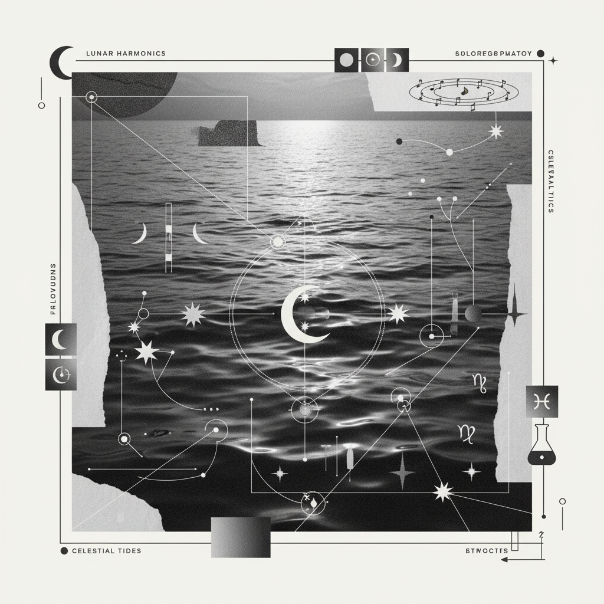

Chronicle 008 / Archetypal Shift
Lunar
Awakening
A celestial passage from the deep, oceanic intuition of the Pisces Full Moon to the refined, intellectual equilibrium of the Libra New Moon.

Transition Metadata
- ELEMENTAL ARC WATER → AIR
- POLARITY YIN → YANG
- MODALITY MUTABLE → CARDINAL
"The soul emerges from the depths of the collective subconscious, drying its wings in the breeze of objectivity."
This journey marks a critical sublimation. In the Pisces phase, we were submerged—dissolving boundaries, navigating the dreamscape, and feeling the weight of the universal ache. As we approach the Libra New Moon, the focus shifts toward the architecture of relationship and the clarity of thought.
It is the movement from feeling the world to understanding it. The water of Pisces provides the raw material of soul-knowledge; the air of Libra provides the scales to weigh its value. We are called to curate our internal experiences, selecting which symbols shall be carried forward into the new cycle.
Ritualistic Attunements
Dream Scribe
Capturing the lingering vapors of the subconscious before they evaporate in the morning light.
Symbol Selection
Distilling the amorphous Piscean fog into a singular, tangible anchor for the mind.
Saline Foot Bath
Grounding the high-water mark of the psyche through physical mineral purification.